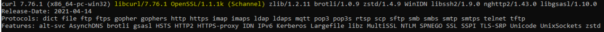
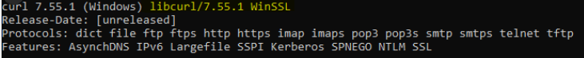

WHO SMART Trust
1.0.0 - 1.0.0

WHO SMART Trust
1.0.0 - 1.0.0

This page is part of the Trust (v1.0.0: Release) based on FHIR (HL7® FHIR® Standard) R4. This is the current published version in its permanent home (it will always be available at this URL). For a full list of available versions, see the Directory of published versions
Onboarding Checklist
Note: In the embedded image the following relabels apply:
It is highly recommended:
With the application as transitive trust participant, the key material is migrated from the DCCG to the TNG already. The connection should be tested with the following command:
curl -v https://tng-uat.who.int/trustList --cert TLS.pem --key TLS_key.pem
You should see a response like:
[
{
"kid": "+jrpHSqdqZY=",
"timestamp": "2023-05-25T07:55:21Z",
"country": "XC",
"certificateType": "UPLOAD",
"thumbprint": "fa3ae91d...",
"signature": "MIAGCSqGSIb3D...",
"rawData": "MIIErTCCA5WgAwIBAgII..."
}
]
The typed Trustlist Routes (e.g. DSC/SCA/Upload/Authentication) may also be tested. As a transitive trust participant, you should limit the usage to http GET requests only.
For a successfull connection to the gateway using full onboarding, there are several steps to prepare:
1) Certificates must be prepared for Acceptance Environment (self signed allowed) following the requirements in Certificate Governance - Authentication: TNPTLS - Upload: TNPUP - SCA(s): TNPSCA
2) Prepare public keys in PEM format in a private Github repository dedicated to acceptance environment keys. Follow the procedure described in this Github repository: https://github.com/WorldHealthOrganization/tng-participant-template (for support contact the tng-support@who.int functional mailbox). After technical onboarding you will be notified.
3) After onboarding in the Acceptance Environment, check the connectivity with the following command:
curl -v https://tng-uat.who.int/trustList --cert TLS.pem --key TLS_key.pem
You should see a output like:
```
[
{
"kid": "+jrpHSqdqZY=",
"timestamp": "2023-05-25T07:55:21Z",
"country": "XC",
"certificateType": "UPLOAD",
"thumbprint": "fa3ae91d...",
"signature": "MIAGCSqGSIb3D...",
"rawData": "MIIErTCCA5WgAwIBAgII..."
}
]
```
4) Test the other Trustlist Routes in the same style (e.g. with DSC/SCA/Upload/Authentication…)
5) Create an Document Signer Certificate and sign it by the SCA
6) Create an CMS Package with the following Command:
openssl x509 -outform der -in cert.pem -out cert.der
openssl cms -sign -nodetach -in cert.der -signer signing.crt -inkey signing.key -out signed.der -outform DER -binary
openssl base64 -in signed.der -out cms.b64 -e -A
Note: cert.der is your DSC, signing.crt is the TNPUP)
7) Upload the CMS Package to the Gateway
curl -v -X POST -H "Content-Type: application/cms" --cert TLS.pem --key TLS_key.pem --data @cms.b64 https://tng-uat.who.int/signerCertificate
8) Download the Trustlist again, and check if your DSC is available.
Note: Some versions of curl don’t attach the client certificates automatically. This can be checked via
curl --version
Ensure that the used version is linked to OpenSSL. Especially under Windows (https://curl.se/windows/):
OpenSSL Test Example (working)
Working Setup

WinSSL Test Example (Not working)
Non Working Setup

1) Prepare public keys in PEM format in a private Github repository dedicated to production environment keys. Follow the procedure described in this Github repository: https://github.com/WorldHealthOrganization/tng-participant-template 2) After onboarding succeeded connect your production setup as described above